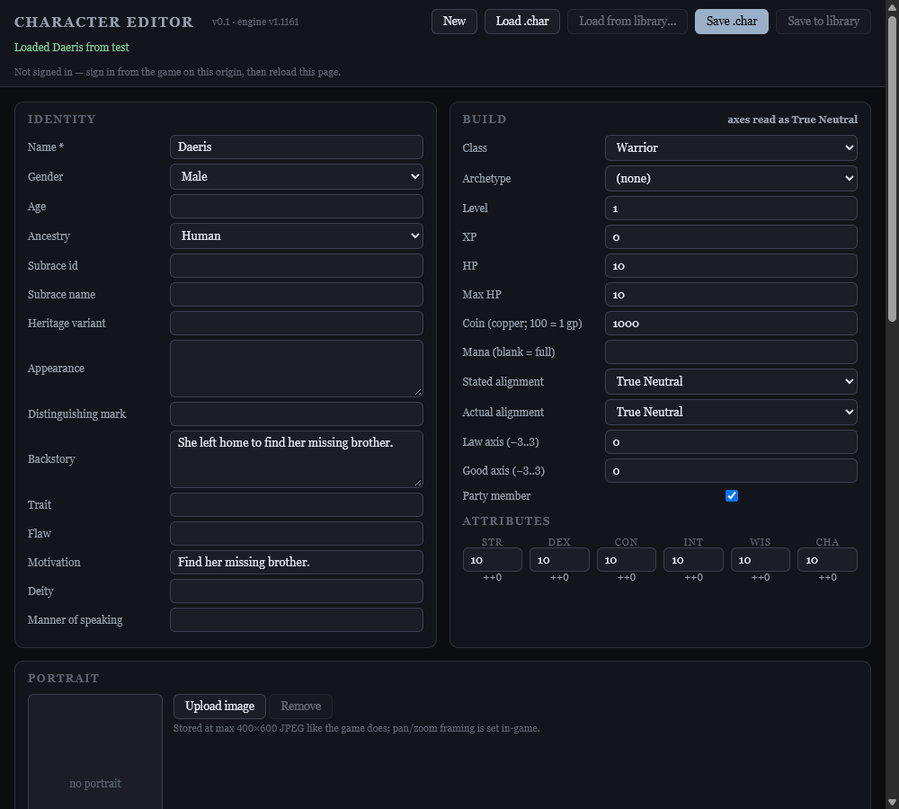
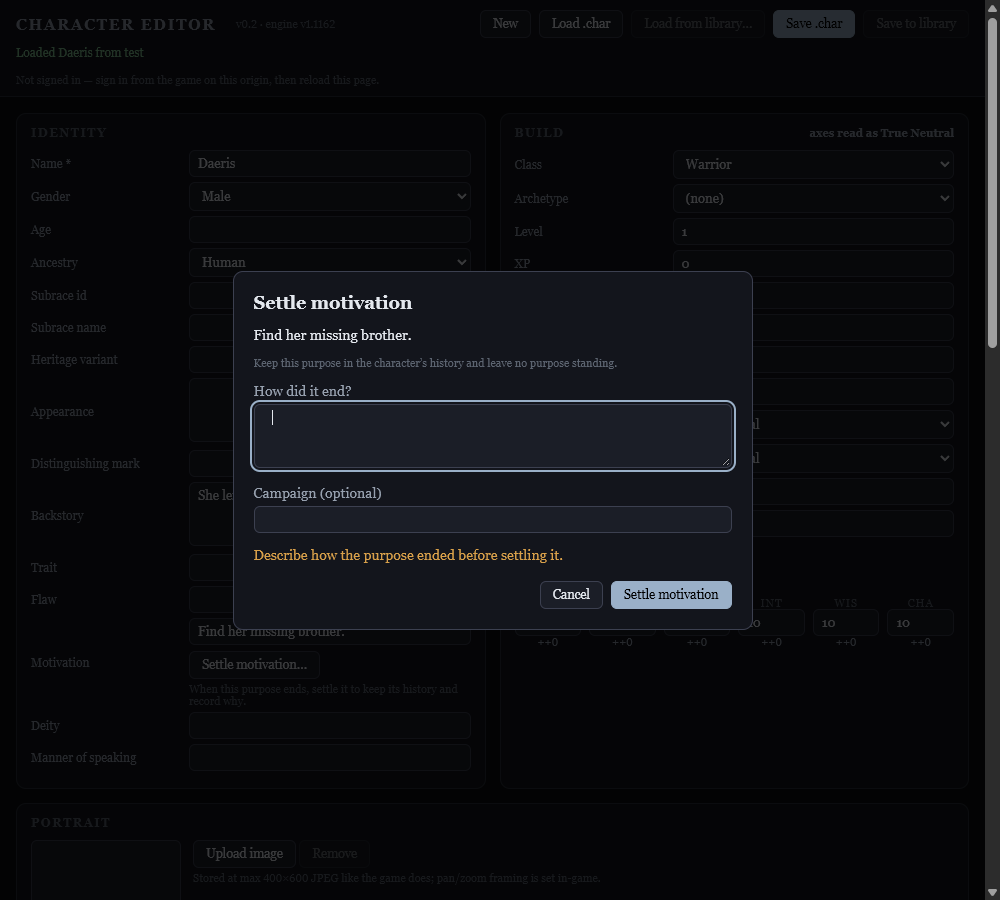
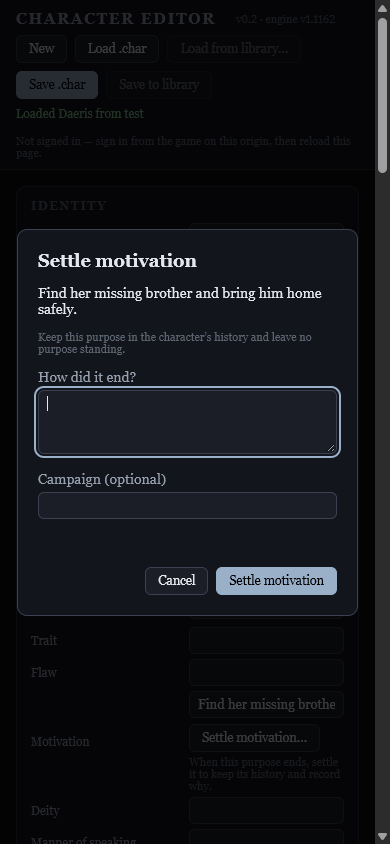

Later follow-up: the remaining SAY-only blocker was resolved and the full row passed review in v1.1163. See final verification. This receipt preserves the earlier findings.
7 October 2026 · v1.1162 · character editor v0.2
The summary replay and editor retirement fixes pass. Independent Astra review found an existing blocker in #527 lead (10), so #437 is partially complete and was not archived.
The summarizer previously applied a reason for settling purpose A to whatever purpose happened to stand when its response arrived. After a live A → B transition, that could retire B. Extraction now names the exact settled purpose and retains campaign, sheet, purpose and history evidence from before the asynchronous request. Already-applied settlements are no-ops; stale or ambiguous evidence is refused visibly. Archived births cannot be replayed. Successful changes advance only the request's local expected state, allowing separate settlement and birth entries without changing the original evidence.
The character editor previously exposed only the motivation text box; emptying it lost the reason and lifecycle history. Its explicit Settle motivation… action requires a reason, calls the shared lifecycle helper, preserves the old purpose in editable portable history, and shows the settled status. Cancellation and stale dialogs cannot retire a different purpose. Save remains the persistence boundary.
| Requirement | Result |
|---|---|
| GM tag retires a fulfilled purpose and records its reason | OPEN for SAY-only speaker evidence. Normal named narration passes. See blocker below. |
| Summary fallback; no replay or wrong-purpose retirement | PASS: exact purpose reference, archived replay, async sheet/campaign/history changes, ambiguous text, case and truncation boundaries, and split settlement/birth entries. |
| Explicit character-editor retirement | PASS: reason validation, cancellation, history, immediate status refresh, repeat settlements, optional campaign, stale-dialog refusal and file/library payload round trips. |
| New purpose comes from the story and produces a toast | PASS for supported live tag evidence and summary fallback; SAY-only tag path shares the open blocker. No automatic manufactured purpose. |
| Closed-purpose prompt, sheet and ending | PASS: none-standing status and settlement reason remain represented. Portable history survives JSON character export/import. |
| Backstories preserved; existing campaign runs out unchanged | PASS: in-memory real-save lifecycle check preserved backstories and skeleton. No campaign or library save was written. |
| Current saved Daeris | Local Village turn 279 already has no standing motivation and retains the Necrotic Dungeon turn 49 settlement. This is evidence about the local save, not a live cloud-library query. |
The growth handler strips SAY tags before checking whether a companion is on screen. A companion named only by the speaker tag is recognized as present elsewhere but rejected here as “not on screen,” with only a console warning. Independent review reproduced both settlement and birth failures.
[SAY:Daeris]"He is safe. My search is finished."
[COMPANION_GROWTH:Daeris|motivation|settled: her brother returned safely]The old motivation remains and no settlement history is written. The corresponding SAY-only new-purpose tag also fails. The shared presence guard in tag_table.js was outside these two fixes and was not changed. This prevents closing #437.
node dev/run-tests.js — ALL GREEN, 2,657 engine assertions and 102 standalone verifier suites.Astra performed critical pre-review before memory changes: avoid retiring an unrelated purpose, replaying historic transitions, losing async provenance, or changing gameplay prompt/cache behavior. A separate Astra reviewed the entire row and approved both fixes while withholding closure because of #527 lead (10). Ambiguity is refused visibly rather than guessed.
Request snapshots are transient per extraction; only five history entries per companion are injected into its prompt. History grows only for actual lifecycle events, not replays, and remains portable. Editor dialogs are created fresh and removed after cancellation or completion; no timers, persistent listeners, remote writes or background resources were introduced.
Before: no explicit lifecycle settlement action.

After: explicit settlement action, reason and optional campaign.

Mobile.
